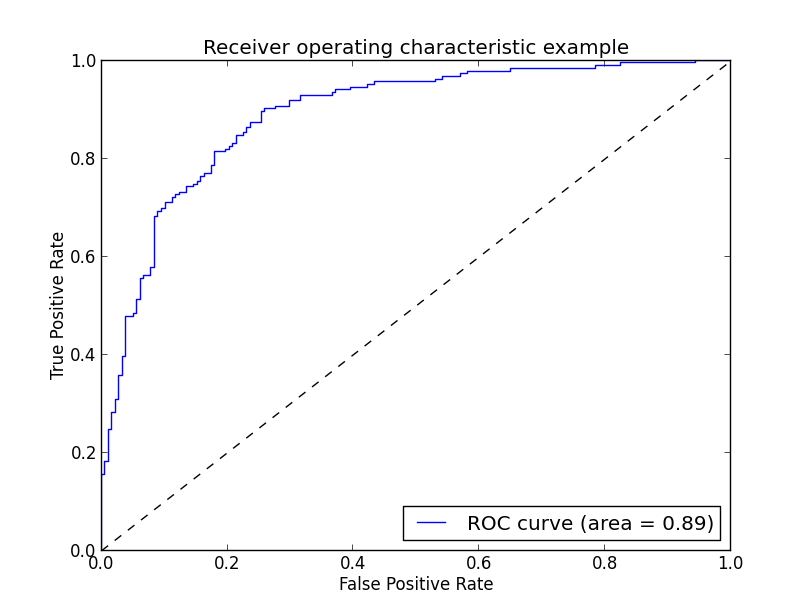
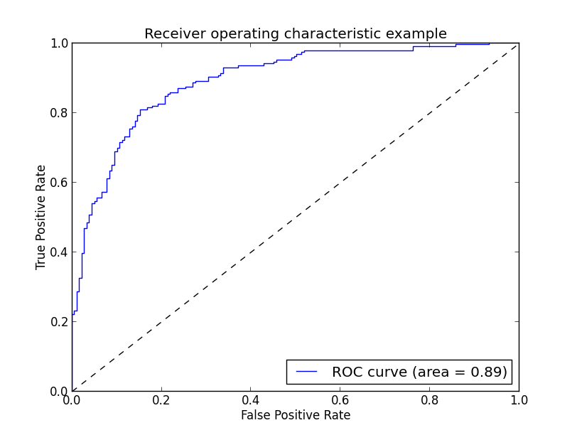
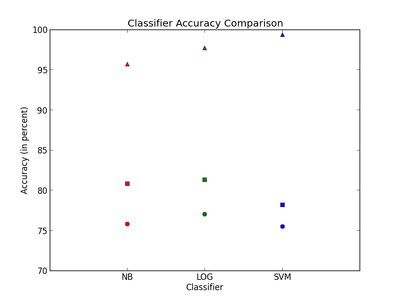

Overview
In this project, I performed twitter analysis by using a classifier to predict the sentiment - positive or negative - of a tweet. My implementation consisted of two parts: training and testing. I first needed to train my classifier by feeding it example features of positive and negative tweets. Using this knowledge, it then predicted sentiments on test data. The features extracted from test and training data consisted of the words the tweet was composed of with some modifications. I used three different types of classifiers and evalutated each on both data sets to measure performance.
Learning
Supervised Learning
I used "classification" in this project because I was performing supervised learning on a discrete model. To be "supervised" means that I was feeding the classifier input labels during the training stage. My model was discrete because a tweet was put into distinct categories. In my case, these were binary since a tweet was either positive or negative. I used three different types of classifiers all from the scikit module.
Classifiers Used

One of the classifiers I used was Bernoulli Naive Bayes. This classifier is called "naive" because it assumes that each feature is independent of the others. I used the Bernoulli version, which classifies features as binaries-being present or not, as opposed to the multinomial version, which stores counts of the features, because tweets are short enough for this to not have much of an impact. The formula on the right shows how classification works with Bayes. Posterior probability is the probability of classifying a tweet as pos or neg given the input features. Likelihood describes the probability of seeing a particular word in a pos/neg tweet. Class prior is probability of that category and predicted prior is the prob of that specific word.
I also used a Logistic Regression classifier. This classifier works by prediciting a binary variable that is categorically dependent, meaning that it depends on the presence of certain features. Unlike Naive Bayes, Logistic Regression does not assume that features are independent and therefore does not have the problem of over-weighting correlated features. In my implementation, I used the scikit class sklearn.linear_model.Logistic Regression with the parameter option of dual=False, which increased my test accuracy by 1%. This is used when the number of samples > number of features.
The last classifier I used was a support vector machine (SVM). An SVM separates the data into different parts by finding the hyperplane that can divide it or by transforming the data into a higher dimension and using a separating hyper plane in that space (also known as the kernel trick).
Representation
Bag of Words Model
In order to feed features from the tweets into the classifiers, I needed to first retrieve features from all of the tweets. I used the bag of words model, which is an orderless representation of what words are in each tweet. When I was training my classifier, I extracted words from the training tweets and passed it to my classifier. I then was able to construct vocabulary lists n-dimensional binary lists which describe true or false whether each of the n words is present in a particular tweet. Each tweet is represented as this list of trues and falses. I could have used word counts instead of a simple true or false, but the brevity of a tweet makes that unnecessary. In addition to using each word (or a unigram), I also used bigrams to describe my feature space. Bigrams are simply the two words next to each other. For example, "Brown CS is cool" is made up of the bigrams "Brown CS", "CS is", and"is cool". When I transitioned to using bigrams, I discovered that my most informative features primarily consisted of bigrams.
Getting the Words
In order to retrieve what words a tweet was made of, I had to parse through each of the tweets. I used a countVectorizer with a custom tokenizer in order to get the features. In my tokenizer, I made the entire tweet lowercase and stripped the punctuation. This was done so that examples such as"Hello!" and "hello," would not be considered two separate words. I then only added the word to the list of features if it was not a stop word, such as "a" or "the". These words do not add meaning to the tweet and unneccessarily clutter the feature space. Also, any word that contained www or http I changed to "URL" and any word with @ I changed to "AT_USER" to make my parsing more consistent. I used regular expressions to loop through each word and change any character that occurred more than two times in a row to only occur twice. For example, "boooo", "boo", and "booo" would all turn into "boo". I also tried using Porter Stemming, but I found that it slightly reduced my performance on the SVM and Naive Bayes classifiers while only slightly helping on Logistic Regression, so I decided not to use it.
Measuring Accuracy
I used a number of methods to evalutate how accurate my classifiers were. I evaluated each classifier on the training data as well as on the test data. For both groups, I found the mean accuracy by using the score function on each classifier (which can evaluate accuracy because it is passed in both the data and the actual labels). I also looked at a number of measures to determine the performance: precision, recall, f1-score. Precision describes the percentage of tweets classified as a certain category that were actually from that category and recall describes the percentage of tweets classified as a category out of all the tweets actually from that category. For a negative sentiment for example, precision describes the portion of tweets reported as negative that are actually negative. Recall looks at all the negative tweets and sees what portion where reported as negative. The f1-score takes into consideration both the precision and recall. It is the harmonic mean of the two and can be thought of as a weighted average of both. In this project, a f1-score of 1 for positive tweets for example means that a classifier has correctly retrieved all positive tweets and that all instances labeled as positive belong to that category.
In addition to these measures, I also looked at the confusion matrix. From left to right, top to bottom, the confusion matrix describes true positives, false negatives, false positives, and true negatives. The goal is to have the diagonal of the matrix be as large as positive and have the number of false occurrences be as low as possible. In this assignment, a true positive is a tweet classified as positive that is actually positive and a true negative is a negative tweet classified as negative. A false positive is a negative tweet mistakenly classified as positive and a false negative is a positive tweet mistakenly classified as negative.
The ROC (receiving operating curve) plots true positives versus false positives. These are obviously correlated (for ex, if classfied everything as positive false-pos rate would be 1 and so would true-pos).The area under the ROC curve is the probability that the classifier will rank a random positive tweet higher than a random negative tweet. The higher the area the better. Also, curves with higher arches are preferable to ones lower down. I plotted this curve for NB and Log.
On Training Data
I used classifier score with the training labels and the training data to see how well my classifier performed on it. All of the classifiers performed extremely well on this data becaus this was what they were trained on. However, a classifier that performs "too well" on the test data is said to be overfitting. Overfitting is dangerous because that means that is attuned too specifically to the nuances in the training data and does not translate well to other cases. For NB, my mean accuracy score was 95.66%. For Log, the accuracy was 97.70%. For SVM, this was 99.4%.
I performed k-fold cross validation on the training data in addition to scoring it. I used 10-fold crosses which means that the classfier will separate the data into ten parts, train itself using 9 of them and then evaluate itself on the last part. This happens 10 times (one for each part), and I used the average score as a way of evaluating my accuracy. For NB, this mean score on cross validation was 75.82%. For Log, this was 77.03% and for SVM, this was 75.67%.
On Test Data
Naive Bayes
The test accuracy was 80.78%. The average precision, recall, and f1-score were all 81%. The confusion matrix below shows the number of true pos and negs and false pos and negs for the categories. The area under the ROC curve was 88.87%.
Classification Report is:
precision recall f1-score support
0 0.82 0.79 0.80 177
1 0.80 0.83 0.81 182
avg / total 0.81 0.81 0.81 359
Confusion Matrix is:
predicted class
0 1
0 [139 38]
actual class
1 [ 31 151]Logistic Regression
The test accuracy was 81.34%. The average precision was 82% while recall and f1-score were 81%. The area under the ROC curve was 89.18%.
Classification Report is
precision recall f1-score support
0 0.85 0.76 0.80 177
1 0.79 0.87 0.83 182
avg / total 0.82 0.81 0.81 359
Confusion Matrix is:
predicted class
0 1
0 [134 43]
actual class
1 [ 24 158]Support Vector Machine
The test accuracy was 78.27%. The average precision was 79% while recall and f1-score were 78%.
Classification Report is
precision recall f1-score support
0 0.82 0.72 0.77 177
1 0.75 0.85 0.80 182
avg / total 0.79 0.78 0.78 359
Confusion Matrix is:
predicted class
0 1
0 [127 50]
actual class
1 [ 28 154]Comparing Classifiers
Overall, my findings were that the logistic regression classifier performed the best. It had the highest precision, recall, and f1-score as well as the best area under the ROC curve and performance on the test data. This makes sense because it did not overfit the data like the SVM did (evidenced by its unusually high training data accuracy). Log also performed better than Naive Bayes on training and test. Intuitively, this makes sense because NB is assuming independence whereas LOG considers the correlation. I found that all of my classifiers benefited greatly from choosing to ignore stop words in my feature space-they each saw about a 4% rise in area under the ROC curve.
Below I've plotted the training accuracy (the triangles), the cross-validation accuracy (the circles), and the test accuracy (the squares).
Analysis in Action
My best classifier, Logistic Regression, was able to accurately identify 81% of the test data. Below, I've written examples of the tweets that it correctly identified with high probability and those that it incorrectly identified.
Positive tweets correctly identified as positive with their probabilities
'0.999794815358' : '@sklososky Thanks so much!!! ...from one of your *very* happy Kindle2 winners ; ) I was so surprised, fabulous. Thank you! Best, Kathleen'
'0.99612241891' : "Obama's got JOKES!! haha just got to watch a bit of his after dinner speech from last night... i'm in love with mr. president ;)"
'0.996301839881' : '@mashable I never did thank you for including me in your Top 100 Twitter Authors! You Rock! (& I New Wave :-D) http://bit.ly/EOrFV'
'0.998140655826':'Obama is quite a good comedian! check out his dinner speech on CNN :) very funny jokes.'
'0.998939279898': "@sketchbug Lebron is a hometown hero to me, lol I love the Lakers but let's go Cavs, lol"Negative tweets correctly identified as negative with their probabilities
'0.999338703231': "I can't watch TV without a Tivo. And after all these years, the Time/Warner DVR STILL sucks. http://www.davehitt.com/march03/twdvr.html"
'0.999567717088' : 'NOOOOOOO my DVR just died and I was only half way through the EA presser. Hate you Time Warner'
'0.999941237891': 'THE DENTIST LIED! " U WON\'T FEEL ANY DISCOMORT! PROB WON\'T EVEN NEED PAIN PILLS" MAN U TWIPPIN THIS SHIT HURT!! HOW MANY PILLS CAN I TAKE!!'
'0.999969985073':'I hate Time Warner! Soooo wish I had Vios. Cant watch the fricken Mets game w/o buffering. I feel like im watching free internet porn.'
'0.999979227245': "@springsingfiend @dvyers @sethdaggett @jlshack AT&T dropped the ball and isn't supporting crap with the new iPhone 3.0... FAIL #att SUCKS!!!"Below are examples of tweets that were incorrectly classified. These are interesting to look at because the classifier gave them a high probability of being the wrong label. However, considering these tweets as a human reader, it is easy to see how that mistake was made. The format below is probability, predicted label, tweet text, actual label. It is interesting to note that all of these tweets were false positives.
['0.901881222384' ,'1', 'Night at the Museum tonite instead of UP. :( oh well. that 4 yr old better enjoy it. LOL','0']
['0.919701663308', '1', 'Talk is Cheap: Bing that, I?ll stick with Google. http://bit.ly/XC3C8', '0']
['0.930075572197', '1', 'Kobe is the best in the world not lebron .', '0']
['0.955837459713', '1','Wat the heck is North Korea doing!!??!! They just conducted powerful nuclear tests! Follow the link: http://www.msnbc.msn.com/id/30921379', '0']
['0.958431815968', '1', "Back from seeing 'Star Trek' and 'Night at the Museum.' 'Star Trek' was amazing, but 'Night at the Museum' was; eh.", '0']]It is also interesting to consider how the classifiers made their decisions. Below, I've printed out the twenty most informative features for each. Notice that the vast majority of them are bigrams. This explains the large jump in accuracy that I experienced by using bigrams. This also helps because examples like "nothing wrong" (which appears below) is correctly identified as positive. If just unigrams were being used, this would not be the case. Also notice that the features for SVM don't make as much sense. That is, they are not obviously positive or negative to a human reader. This explains why the SVM overfit to the training data and did not perform as well as the other classifiers on the test data: it found example features that occurred in the training data but was unique to that situation. For example, "wrong one" was positive and "lol ha" was negative. This might have been the case in the tweets which it occurred in the training data but not translate more generally.
Naive Bayes informative features
-44.0529 really sad 76.0000 URL add
-42.0168 sad day 75.0000 get 100
-40.9836 makes sad 75.0000 using URL
-40.9836 like crap 74.0000 add everyone
-40.0000 AT_USER lost 74.0000 day using
-35.9712 3gs 74.0000 everyone train
-34.9650 feeling sick 74.0000 followers day
-33.0033 lost please 74.0000 pay vip
-33.0033 tummy hurts 74.0000 train pay
-30.9598 canceled 57.0000 thanks follow
-28.9855 soo sad 39.5000 100 followers
-28.9855 throat hurts 33.0000 youre welcome
-28.0112 farrah 28.0000 hey thanks
-27.0270 passed away 27.0000 thanks ff
-27.0270 toe 23.0000 smiles
-26.5252 hates 22.3333 AT_USER congrats
-25.0000 wishing could 22.0000 always good
-23.3100 gutted 21.5000 welcome twitter
-22.9885 going miss 21.0000 joined twitter
-21.9780 iphone 3gs 20.0000 blessedLogisitic Regression informative features
-3.5373 sad 3.3552 cant wait
-2.7838 misses 2.7903 wish luck
-2.7255 hates 2.2290 thank
-2.7197 lonely 2.2248 welcome
-2.5822 cancelled 1.9765 proud
-2.5720 headache 1.9315 yayy
-2.5536 hurts 1.8863 dont miss
-2.5416 missing 1.8794 wasnt bad
-2.5157 sucks 1.8473 chillin
-2.4896 miss 1.8228 cannot wait
-2.4468 unfortunately 1.8152 dont sad
-2.4436 died 1.8128 smile
-2.3872 sadly 1.7574 cute
-2.3346 sick 1.7522 dont need
-2.3323 bummed 1.7182 congratulations
-2.3262 disappointed 1.7111 congrats
-2.2786 depressing 1.6997 nothing wrong
-2.2603 gutted 1.6874 blessed
-2.2123 bummer 1.6183 day gone
-2.2064 poor 1.6142 yay SVM informative features
-1.3939 night yes 1.4227 wish luck
-1.2901 thx babe 1.3264 could hate
-1.2588 thank mommy 1.3243 sleep talk
-1.2431 agreed lol 1.3085 says really
-1.2274 moving thank 1.2975 think alone
-1.2134 know talking 1.2766 oh sad
-1.2133 sad 1.2765 cant wait
-1.2132 see love 1.2562 cant fair
-1.2065 lol ha 1.2405 aw miss
-1.2062 much hope 1.2297 nope sorry
-1.1781 awards work 1.2086 shit dont
-1.1776 hey ever 1.1996 sorry pity
-1.1743 info wrong 1.1990 omg want
-1.1734 worry fun 1.1980 nothing wrong
-1.1706 u gnite 1.1970 study dont
-1.1671 lol send 1.1963 sold car
-1.1477 get town 1.1924 wrong one
-1.1375 hey shout 1.1923 hate right
-1.1336 good bye 1.1875 URL heart
-1.1319 hates 1.1807 feel sigh